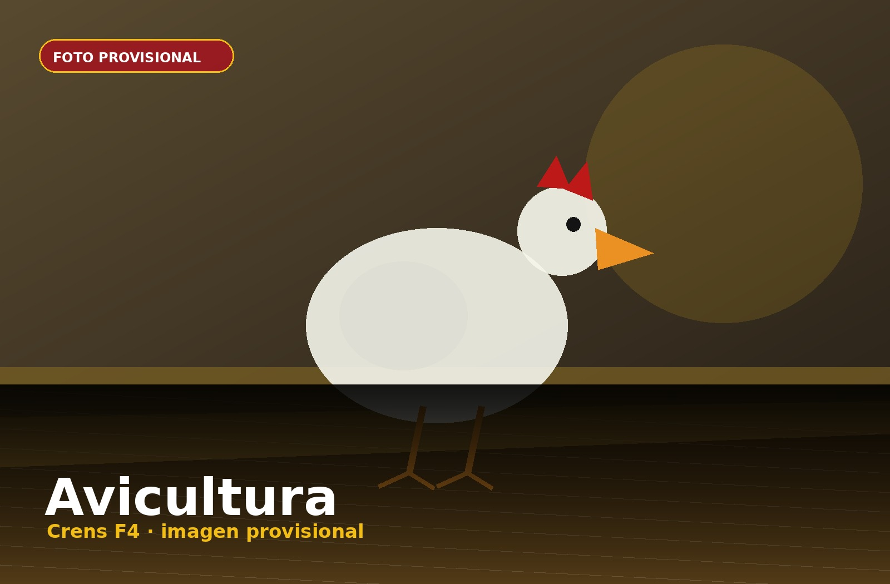
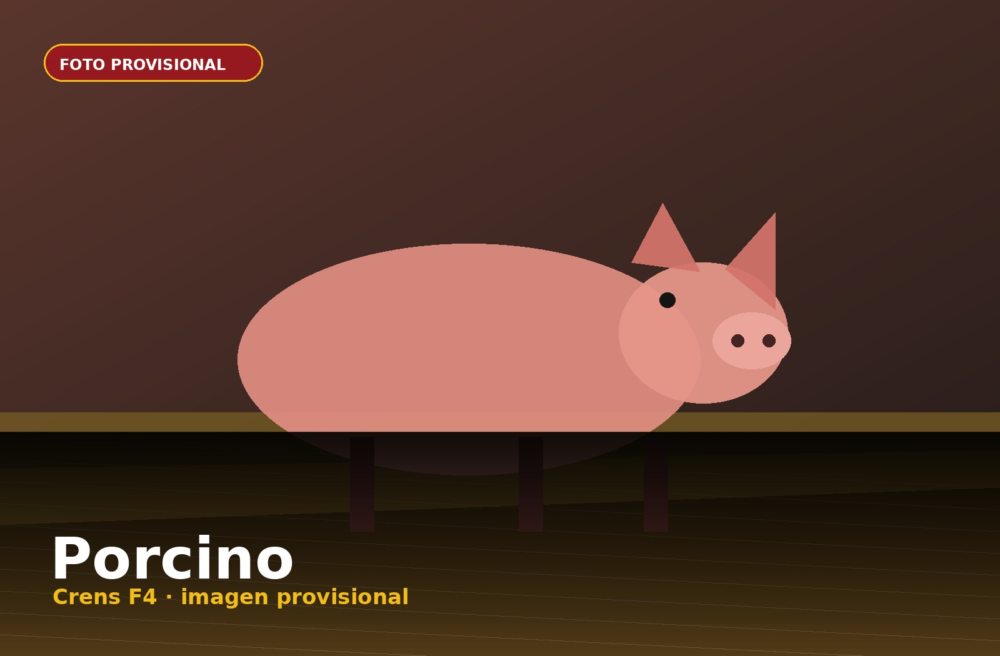
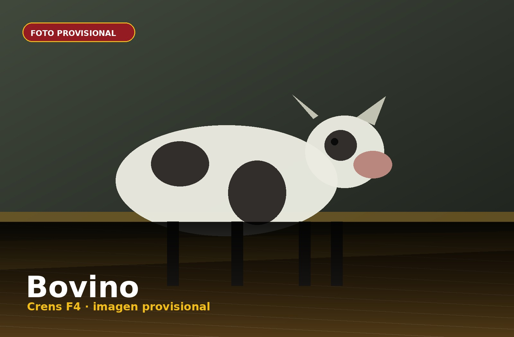
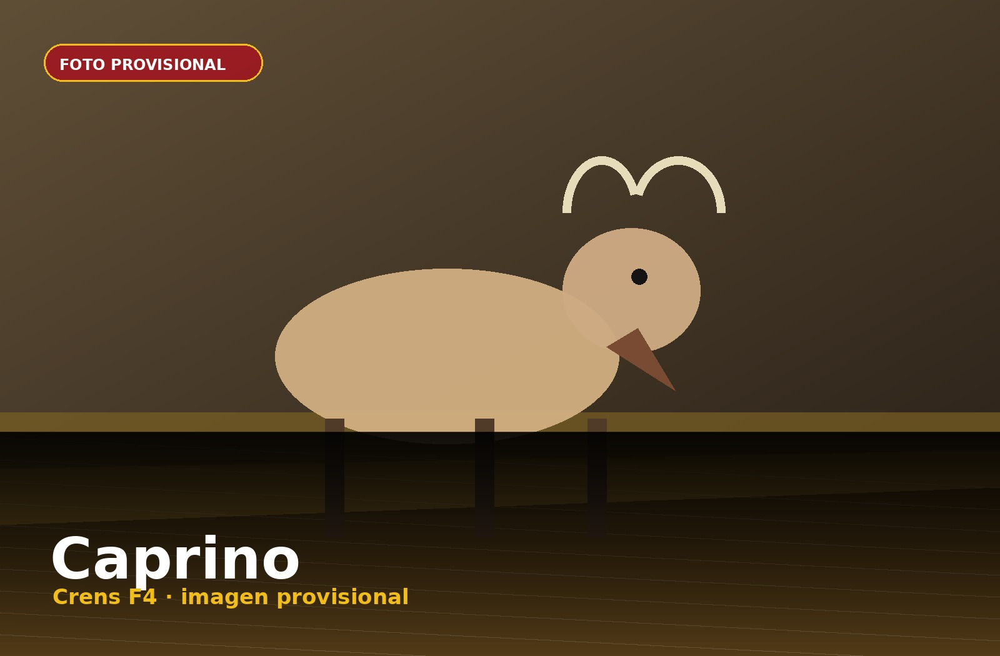
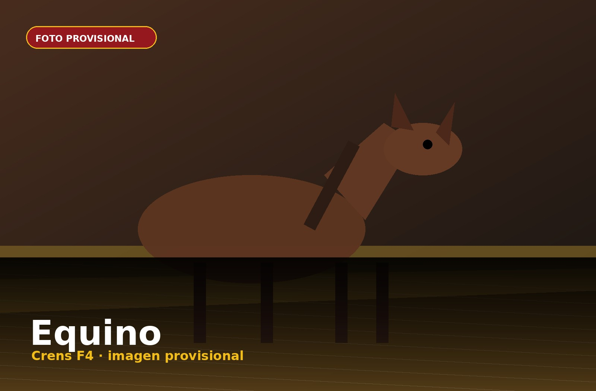

Avicultura
Piensos para broilers, ponedoras y reproductoras, adaptados a cada fase productiva.
Ver gama →Soluciones nutricionales para avicultura, porcino, bovino, ovino, caprino y equino.
Una gama pensada para cubrir distintas especies, fases y necesidades productivas.

Foto provisionalPiensos para broilers, ponedoras y reproductoras, adaptados a cada fase productiva.
Ver gama →
Foto provisionalSoluciones para destete, precebo, cebo y reproductoras, orientadas a rendimiento y regularidad.
Ver gama →
Foto provisionalNutrición para vacuno de carne y leche, con formulaciones equilibradas y fiables.
Ver gama → Foto provisional
Foto provisionalPiensos y mezclas para explotaciones de ovino, ajustadas a necesidades de mantenimiento y producción.
Ver gama →
Foto provisionalNutrición para caprino con especial atención a digestibilidad, sanidad y rendimiento.
Ver gama →
Foto provisionalPiensos para caballos diseñados para aportar energía, fibra y equilibrio nutricional.
Ver gama →Piensos terminados en diferentes formatos, preparados para responder a las necesidades de cada cliente y cada explotación.
Solicitar información Foto provisional
Foto provisional